04 Combinational Circuits
Combinational Circuits
Decoder
A decoder is a combinational circuit that converts binary coded data into other forms e.g.
Octal, decimal, hexadecimal etc. It has ‘n’ inputs & ≤2 n outputs.
●
Enable input -
It is activating signal It is an optional input.
Active High enable (E) and Active low enable.
(𝐸) Decoder contains AND gate or NAND gates.
At any instant, only one output is logic ‘1’ and all other outputs are logic ‘0’. Therefore,
n × 2 n decoder is also known as 1 of 2 n decoder. An n × 2 n decoder generates all the 2 n possible minterms for the ‘n’ input variables.
Any Boolean function can be implemental with a decoder by summing or ORing the desired
minterms.
NOTE:
Implementation of higher order decoder using lower order decoder.
●
| Give Decoder | To be implemented | Required number of decoders |
|---|---|---|
| (2 × 4) line | (4 × 16) line | 1 + 4 = 5 |
| (2 × 4) line | (3 × 8) line | 2 + 1 Nor gate |
| (4 × 16) line | (8 × 256) line | 1 + 16 = 17 |
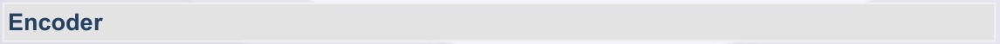
It performs the inverse operation of decoder .
It generates the binary code corresponding to the input value.
It has ≤2 n input and ‘n’ outputs.
●
Encoder is used to convert other codes to binary such as,
i. Octal to binary encoder (8 × 3 line) ii. Decimal to BCD encoder (10 × 4 line) iii. Hexadecimal to binary encoder (16 × 4 line)
Encoder contains OR gate.
In a basic encoder, at any instant only one input must be logic ‘1’ or other input must be
logic ‘0’ otherwise, the circuit produces invalid output. Above problem is resolved by priority encoder.
In a priority encoder, if more than one input is at logic ‘1’, then the output corresponds to
the input having the highest decimal value.

The ‘Multiplexer’ is a special versatile and one of the most widely used standard circuit in
digital design. It has ‘2 n ’ input lines, ‘n’ selection lines and 1 output.
●

MUX is also known as- i. Data selector ii. Parallel to serial converts iii. Many to one circuit iv. Universal logic circuit v. Waveform generator
A decoder is exactly the same as the selection network of the MUX.
To implement an ‘n’ variable Boolean function, a MUX with ‘n’ select inputs is needed, that is
a 2 n × 1 MUX. An ‘n’ variable Boolean function can also be implemented using a MUX having only (n 1)
select input i.e., 2 n-1 × 1 MUX.
NOTE:
To implement 2 n ∶ 1 MUX by using 2 ∶ 1 MUX, the total number of 2 ∶ 1 MUX required is
(2 n 1).
| Given MUX | To be implemented | Required |
|---|---|---|
| 2 ∶1 | 16 ∶1 | 8 + 4 + 2 + 1 = 15 |
| 4 ∶1 | 16 ∶1 | 4 + 1 = 5 |
| 4 ∶1 | 64 ∶1 | 16 + 4 + 1 = 21 |
| 8 ∶1 | 64 ∶1 | 8 + 1 = 9 |
| 8 ∶1 | 256 ∶1 | 32 + 4 + 1 = 37 |
For implementation of basic gates, the required number of 2 ∶ 1 MUX is 1.
For implementation of universal and special purpose gates, the required number of 2 ∶ 1 MUX
is 2.
Application :
i. Data selection, data routing ii. Operation sequencing iii. Parallel to serial conversion iv. Waveform generation v. Logic function generation
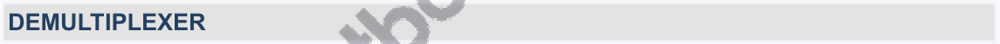
DEMULTIPLEXER perform the inverse operation of MUX.
A ‘decoder’ with an enable input can function as a ‘DEMULTIPLEXER’
It has one input, n select lines and 2 n output.
DEMUX is also known as- i. Data distributor ii. Serial to parallel converter iii. One to many circuit DEMUX cannot be used as an ‘Universal gate’.
In DEMUX, MUX selection network remain same.
10 NAND gate is needed.
An n × 2 n decoder is equivalent to 1 × 2 n DEMUX.
Implementation of large size circuit (Decoder, MUX, DEMUX) from smaller size circuit.
●
| Given DEMUX | To be implemented | Required |
|---|---|---|
| 1 : 2 | 1 : 4 | 1 + 2 = 3 |
| 1 : 2 | 1 : 8 | 1 + 2 + 4 = 4 |
| 1 : 2 | 1 : 16 | 1 + 2 + 4 + 8 = 15 |
|---|---|---|
| 1 : 2 | 1 : 64 | 1 + 2 + 4 + 8 + 16 + 32 = 63 |
| 1 : 4 | 1 : 16 | 1 + 4 = 5 |
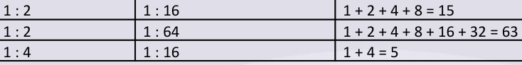
Half-Adder
It adds two bits
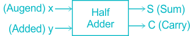
| Input | Output | ||
|---|---|---|---|
| X | Y | S | C |
| 0 | 0 | 0 | 0 |
| 0 | 1 | 1 | 0 |
| 1 | 0 | 1 | 0 |
| 1 | 1 | 0 | 1 |
The logical expression for sum and carry are:
●
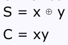
Half adder can be realized by using one EX-OR gate and an AND gate
●
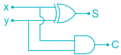
NOTE: To implement a half adder- i. Number of NAND gate required is 5. ii. Number of NOR gate required is 5. iii. Number of 2 × 1 MUX required is 3. iv. Minimum number of logic gates, if we have all gates except EX-OR and EX-NOR is 3.
Full Adder
It adds three bits
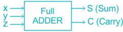
| Input | Output | |||
|---|---|---|---|---|
| X | Y | Z | S | C |
| 0 | 0 | 0 | 0 | 0 |
| 0 | 0 | 1 | 1 | 0 |
| 0 | 1 | 0 | 1 | 0 |
| 0 | 1 | 1 | 0 | 1 |
| 1 | 0 | 0 | 1 | 0 |
| 1 | 0 | 1 | 0 | 1 |
| 1 | 1 | 0 | 0 | 1 |
| 1 | 1 | 1 | 1 | 1 |
Logical expressions for SUM and CARRY are:
●
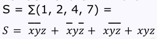
The SUM is an ‘ODD’ function

The CARRY is a majority function
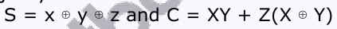
Full Adder from two half adder:
●
NOTE: To implement a Full Adder, i.
Number of NAND gates required is 9. ii.
Number of NOR gates required is 9.
A binary parallel adder is a combinational digital circuit that adds two binary number in
parallel form. Let the two four bit inputs designed as X (Augend) and Y (Addend) then,
●
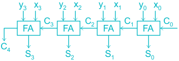
In general, for ‘n’ bit addition, ‘n’ binary parallel adder requires:
‘n’ full adder Or (n 1) full adder and one half adder Or (n 2) [2 half adder + 1 OR gate] and a half adder
Or (2n 1) half adder and (n 1) OR gate.
In parallel adder, propagation delay is present from input carry to output carry, hence it is
called Ripple Carry Adder. The carry bit propagation from LSB to MSB position in a ripple manner therefore, this type
of parallel adder is known as ‘Ripple Carry Adder’.
NOTE In a ‘n’ bit carry generator circuit, 𝑛(𝑛+1) Number of AND gates = 2 Number of OR gates = n The propagation delay of carry look ahead adder is always a constant factor and is
independent of the number of bits in the adder. 𝑛(𝑛+1) A look-ahead-carry scheme for ‘n’ bit addition requires (n + 1) OR gates and
AND 2 gates.
Half Subtractor
A half subtractor is a combinational circuit that subtracts one bit from the other and produces
the difference.
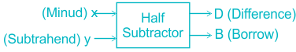
X Y D B 0 0 0 0 0 1 1 1 1 0 1 0 1 1 0 0
Logical expression: D = x ⊕ y and B = 𝐵= 𝑥𝑦
Implementation of half subtractor circuit
●
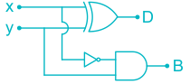
Half subtractor or half adder circuit by using control action of EX-OR gate.
●
When control input = 0 ⇒ Half adder operation When control input = 1 ⇒ Half subtractor operation
NOTE To implement a half subtractor i. Number of NAND gates needed = 5 ii. Number of NOR gates needed = 5
Full Subtractor
It subtracts three bits.
●
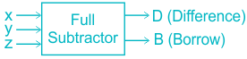
| X | y | z | D | B |
|---|---|---|---|---|
| 0 | 0 | 0 | 0 | 0 |
| 0 | 0 | 1 | 1 | 1 |
| 0 | 1 | 0 | 1 | 1 |
| 0 | 1 | 1 | 0 | 1 |
| 1 | 0 | 0 | 1 | 0 |
| 1 | 0 | 1 | 0 | 0 |
| 1 | 1 | 0 | 0 | 0 |
| 1 | 1 | 1 | 1 | 1 |
Logical Expression:
●
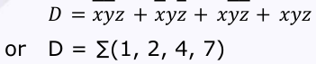
It is an ‘ODD’ function.
●
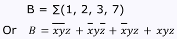
Full subtractor from two half subtractor
●

Full subtractor = 2 half subtractor + 1 OR
NOTE: To implement a full subtractor, Number of NAND gates required = 9 Number of NOR gates required = 9
A magnitude comparator is a combinational circuit which is used to compare two numbers A
and B, determines their relative magnitudes. There are two types of magnitude comparator i. Single bit magnitude comparator ii. Multiple bit magnitude comparator.
Single bit magnitude comparator
The inputs are of 1 bit each.
●

| A | B | X | Y | Z | Output |
|---|---|---|---|---|---|
| 0 | 0 | 0 | 1 | 0 | A = B |
| 0 | 1 | 0 | 0 | 1 | A < B |
| 1 | 0 | 1 | 0 | 0 | A > B |
| 1 | 1 | 0 | 1 | 0 | A = N |
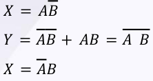
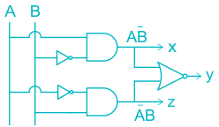
Multiple bit magnitude comparator
The two inputs of 4 bits each.
●
Example : 4-bit magnitude comparator.
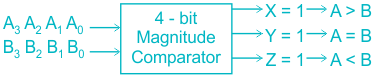
Y = Y 3 Y 2 Y 1 Y 0 Where,
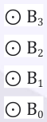
𝑋= 𝐴 3 𝐵 3 + 𝑌 3 𝐴 2 𝐵 2 + 𝑌 3 𝑌 2 𝐴 1 𝐵 1 + 𝑌 3 𝑌 2 𝑌 1 𝐴 0 𝐵 0 𝑍= 𝐴 3 𝐵 3 + 𝑌 3 𝐴 2 𝐵 2 + 𝑌 3 𝑌 2 𝐴 1 𝐵 1 + 𝑌 3 𝑌 2 𝑌 1 𝐴 0 𝐵 0